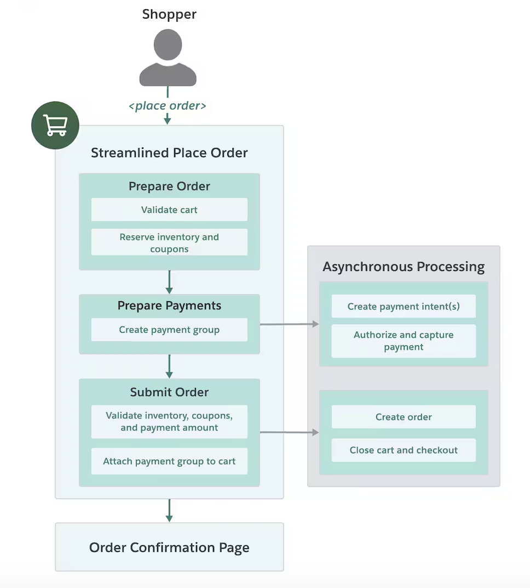

Streamlined Place Order
API feature documentation for Salesforce Commerce Cloud developers. Includes technical diagrams, code samples, and detailed description.
Data-Driven Technical Writer
I translate complex information into clear, engaging content.
To paraphrase Kurt Vonnegut, technical writing and journalism reveal uniquely little about the writer. So, here's a bit about me:
As a technical writer, I work with engineering teams to document APIs and other tools for developers. I write and review conceptual overviews, how-to guides, release notes, and reference documents. To aid comprehension, I incorporate code samples, technical diagrams, and videos.
With experience in data science and journalism, I bring an analytical approach and knack for plain language to my work. I also have an array of personal and academic projects that are situated at the fruitful intersection of data analysis and writing.
I live in San Francisco and enjoy bodysurfing, fishing, and playing bossa nova guitar.
Salesforce
2021 — Present
Create developer documentation for Salesforce Commerce Cloud.
Wesleyan Media Project
2019 — 2021
Analyzed political advertisements on digital platforms.
Salesforce
Summer 2019 & 2020
Authored customer emails for technical updates and created an internal wiki.
The Wesleyan Argus
2018 — 2021
Produced and edited campus newspaper articles for biweekly publication.
API feature documentation for Salesforce Commerce Cloud developers. Includes technical diagrams, code samples, and detailed description.
Product migration guide for Salesforce Commerce Cloud. Includes step-by-step instructions and opinionated guidance.
In-depth overview of algorithmic transparency and AI ethics. Published in Medium's Data Science Collective.
Contribution to U.S. election analysis published by the Centre for Comparative Politics and Media Research.
Computational research project revealing targeted advertising methodologies used by 2020 U.S. presidential candidates on Snapchat. Published in the Wesleyan Media Project blog.
Collaborative research project tracking U.S. presidential candidate references to COVID-19 in Facebook advertisements. Published in the Wesleyan Media Project blog.
Report on food security for families with children in Middletown, Connecticut. Prepared for the Middlesex Coalition for Children.
Article detailing my process of visualizing and analyzing citations between news sources. Published in Medium's Towards Data Science.
Collection of articles written as Staff Writer and Copy Editor for the Wesleyan University student newspaper
Data-driven reporting about academic outcomes for students in foster care. Published in Medium's Age of Awareness.
Article with accompanying data visualizations analyzing the representation of authors in Common Core English curriculums. Published in Medium's Towards Data Science.
Data-driven reporting about inmate populations in the Connecticut prison system.
R, Python, SQL, JavaScript, HTML, CSS, XML
Tableau, Google Analytics, GitHub, Perforce, Google Cloud Console, Lucidchart